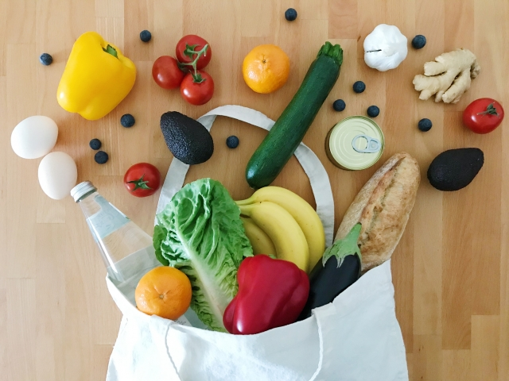

KAJISHIFTの仕組み
KAJISHIFTは、家事を依頼したい方と、家事スキルを活かして働きたい方をマッチングするサービスです。 個人のワーカーに直接依頼でき、プロフィールやレビューを見ながら、あなたに合った方を選べます。
KAJISHIFTの特徴
料金が分かりやすい
1時間あたり1,500円〜から。サービス内容に応じた明確な料金設定で、安心してご利用いただけます。
柔軟な利用が可能
単発利用から定期利用まで、あなたのライフスタイルに合わせて選べます。まとめて依頼も可能です。
安心・安全
すべてのワーカーは本人確認済み。事前審査を通過した信頼できる方のみが活動しています。
サービスメニュー
掃除
リビング、キッチン、お風呂場など、お部屋全体の清掃をお手伝いします

料理・作り置き
日々の食事作りから、作り置きおかずまで対応します
洗濯
洗濯物の取り込みから、たたみ、アイロンがけまで対応します

買い物代行（日用品・食材）
食材や日用品の買い出しをお手伝いします
今すぐ始めませんか？
家事代行を依頼したい方も、家事スキルで働きたい方も、まずは登録してみましょう
安心・品質管理
本人確認
運転免許証やマイナンバーカードで本人確認を行います
面談・審査
オンラインまたは対面で面談を行い、適性を確認します
研修・テスト
基本的な家事スキルやマナーについて研修・テストを実施します
デビュー
審査を通過したワーカーがサービスを開始します
まずは無料で登録
登録料はかかりません。利用した分だけのお支払いです
よくある質問
初めてでも利用できますか？
はい、初めての方でも安心してご利用いただけます。アプリから簡単に登録でき、予約もすぐにできます。不明な点があれば、お気軽にお問い合わせください。
単発利用は可能ですか？
スポット利用も可能です。定期利用だけでなく、必要な時だけの利用も歓迎です。まとめて依頼することもできます。
料金はいくらですか？
サービス内容により異なりますが、1時間あたり1,500円〜からご利用いただけます。最低利用時間は2時間です。詳しくは料金ページをご確認ください。
登録に費用はかかりますか？
登録料はかかりません。利用した分だけのお支払いとなります。ワーカーとして登録する場合も、登録料や月額費は一切かかりません。
キャンセルはできますか？
48時間前までなら無料でキャンセル可能です。48-24時間前は50%、24時間以内は100%のキャンセル料がかかります。詳しくは利用規約をご確認ください。
対応エリアはどこですか？
札幌市、江別市、北広島市、石狩市を中心にサービスを提供しています。詳細は料金・エリアページをご確認ください。今後、エリアを拡大予定です。
ワーカーを選べますか？
はい、複数のワーカーから選択できます。プロフィールや評価を確認して、お気に入りのワーカーを選べます。リピート利用も可能です。